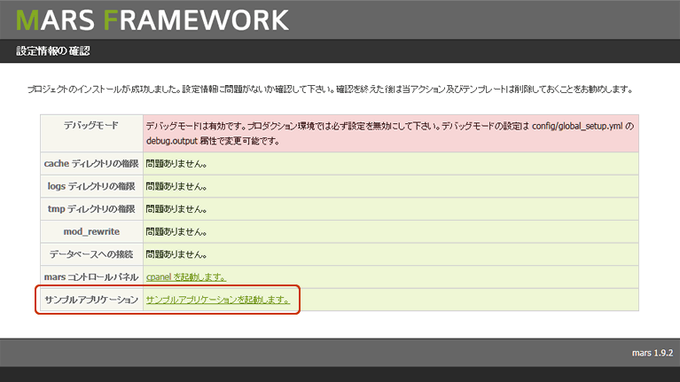

戻る
最終更新日: 2011 年 4 月 26 日
サンプルアプリケーションから学べること
delta が提供するパッケージにはデモ用のサンプルアプリケーションが同梱されています。アプリケーションでは、フレームワークが提供する基本的な機能が使われているので、実開発に入る前にインストールしてコードを眺めて見ると良いでしょう。 学習できる主な内容は次の通りです。
- アプリケーションのディレクトリ構成
- モジュールの概念
- アクション、ビヘイビア、ビューの役割
- ビューヘルパの使い方
- バリデータやコンバータクラスの使い方
- トランザクショントークンの発行
- ユーザ認証
- データベースとの連携
- ページネーション
- ファイルのアップロード
インストール
インストールはとても簡単です。コンソールを立ち上げて次のコマンドを入力して下さい。
- Shell Code# サンプルアプリケーションのインストール
# プロジェクトディレクトリへ移動
$ cd /var/www/first_project
# サンプルアプリケーションのインストール
$ delta install-sample
# インストール完了
sample application install completed.
install directory: /var/www/first_project
インストールの完了メッセージが表示されました。実際のディレクトリ構成を見ると分かりますが、アプリケーションディレクトリの modules 下に entry、manager という 2 つのディレクトリが追加されていることが分かります。
最後にアプリケーションからデータベースに接続するための接続情報を設定ファイルに定義します。
- YAML Code# config/application.yml
database:
default:
dsn: 'mysql:host={host}; dbname=delta; port=3306' # PostgreSQL の場合は 'pgsql:' となる
user: {user}
password: {password}
dsn (Data Source Name) はデータベースに接続のための識別子です。詳しくは  PDO Drivers を参照して下さい。
PDO Drivers を参照して下さい。
ファイルを保存したらブラウザを立ち上げてプロジェクトの URL を開いてみましょう。

設定情報の確認ページから「サンプルアプリケーションを起動します。」をクリックして下さい。サンプルアプリケーションの画面が表示されたらインストール成功です。実際にアプリケーションを動かして、プログラムの動作を確認してみましょう。
サンプルアプリケーションが使用するテーブルは、アプリケーション起動時に database (default) 属性に定義したスキーマに自動生成されます。